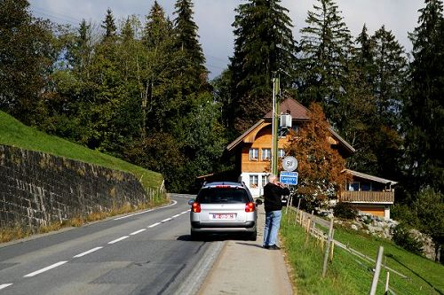
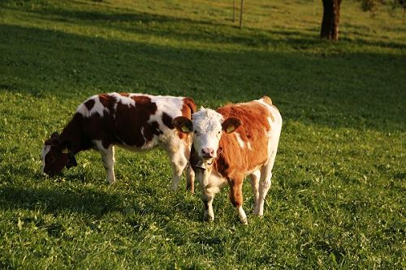
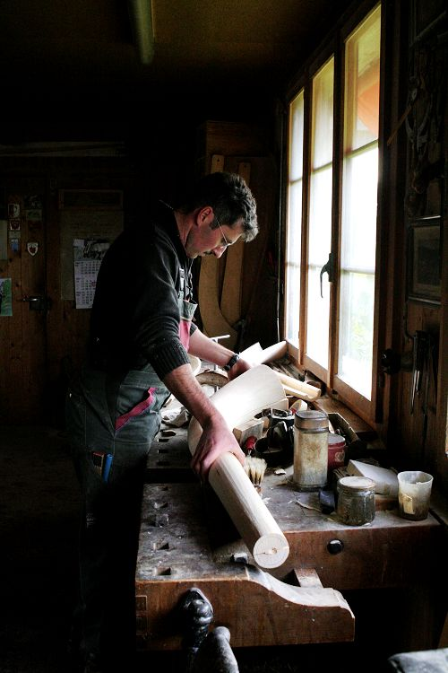
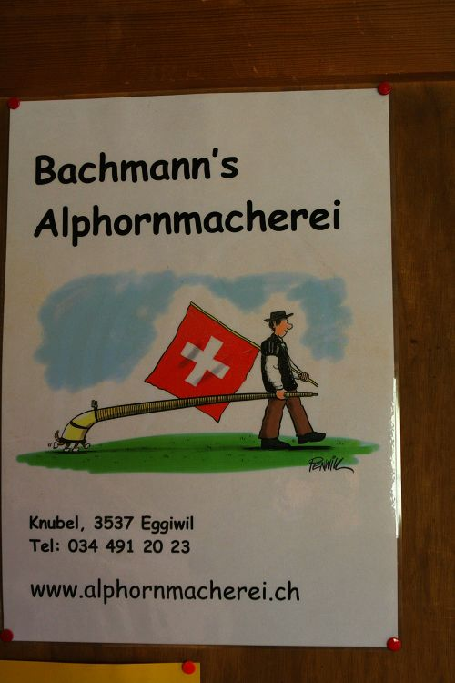
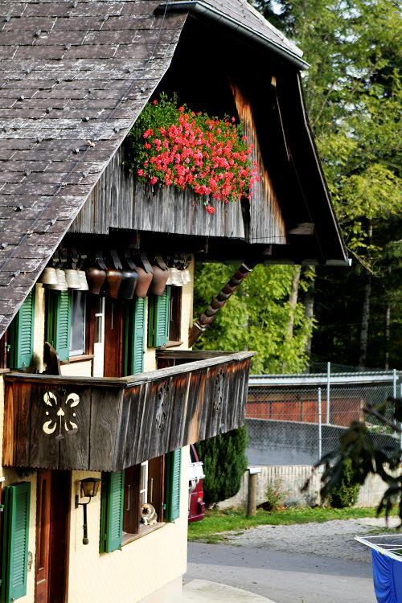
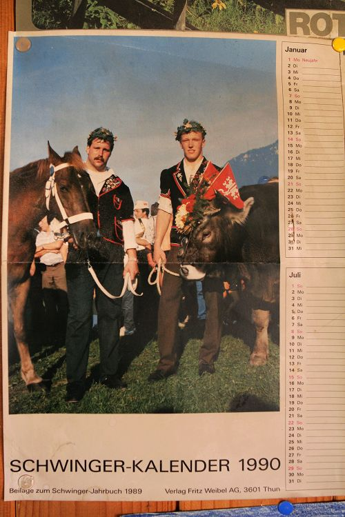

Alphorn@Emmental @ Oct 27, 2009
alphorn在香港Yahoo字典里的解释：
n. (瑞士牧人)木製的號角
半路停在好风景处下车拍照；

农户在自家养的奶牛耳朵上做了编号；

号角制作工艺展示；

照片上的古老艺术；

手工作坊印刷的宣传单，TOM拿走厚厚一叠带给他儿子的学校；

作坊里有许多手工制造的工具，从木头的色泽可以看出使用有些年代了，据说是父辈们传下来的工具；

号角不止一个款式，这是其中一款；

每个人尝试吹号角的样子都差不多，憋得脸红脖子粗的，呵呵，不容易吹出声音哦；
手工艺者讲述号角如何制作的过程，他手上拿着藤条均进口自东南亚；

看到房屋上系着的铃铛了吗？那是拴在牛脖子上的，傍晚农户可寻着铃声找回放养的牛。瑞士乡下每年组织奶牛比赛，选出最美的奶牛，也算丰富业余生活吧。

1990年的月历上印着牛和马选美比赛的照片呢：P
注意左边牵马的男人，是这个号角手工艺者吗？

5 Responses to “Alphorn@Emmental”
2009-10-27
色彩看得我几乎眩晕。。。空气好清新。我愿意世代在那里当一头食草的羊 ：P
2009-10-27
看来你对这个乡下相当满意了？
2009-10-28
我去瑞士的时候看到那些牛，都挂着漂亮的铃铛，走起来叮叮当当的煞是好听，当时就觉得在那里当一只牛好幸福啊。
2009-10-28
照片拍得真棒，留住了时光似的。而且还是美好的时光。
2009-10-29
还好是号角，不然我还以为是“大烟枪”呢：）
Leave A Reply
存档只读，评论已关闭。